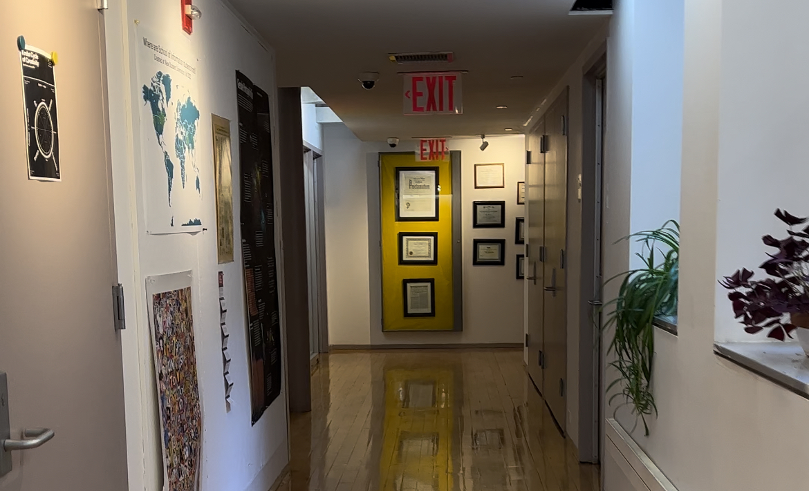

I am a UI/UX designer and I am currently studying at the Pratt Institute in New York city. I love designing interfaces that are easy to implement as well as use.
A combination of creativity and functionality has defined who I am as a UX designer today. My fundamentals as an engineer direct efficiency and performance while my creativity drives design. The blend has regularly created an optimal product that always resonated with my target audience.
Over the years, I’ve noticed my ability to empathize has played a huge part in my ability to market a product. Being a naturally compassionate and helpful person, I find myself capable of acknowledging the desires and needs of my audience before they know it themselves. Gifted with this unique combination of intuition, analytics, art, and efficiency, I enjoy building systems that are aesthetically appealing and also easy to use.
Click on the image below to explore Pratt School of Information website
